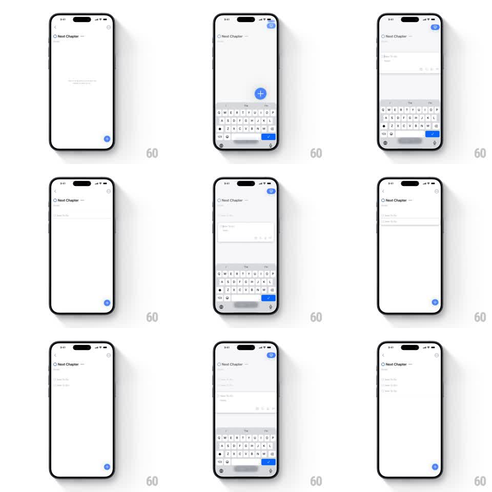

Media
Frame-by-frame

Rebuild this interaction 1:1: Things 3's new to-do - the blue + button at the bottom-right can be tapped or dragged up into the list, expanding into an editable to-do card with the keyboard, then settling as a new row under "Next Chapter".

Rebuild this interaction 1:1: Things 3's new to-do - the blue + button at the bottom-right can be tapped or dragged up into the list, expanding into an editable to-do card with the keyboard, then settling as a new row under "Next Chapter".
## Integration
Integration: stack-agnostic spec - springs given as stiffness/damping, timed motions as duration + curve; map every value to your framework and animation library of choice.
## Scene
Light list screen: "Next Chapter" heading, existing rows with circle checkboxes, and a floating blue + button bottom-right. Edit state: a white to-do card with a title field ("New To-Do" placeholder), note field, and toolbar icons, keyboard up with a blue check button on the input bar.
## Motion spec
Pattern: FAB morph to card, ~400ms.
- Tap: the + button expands into the to-do card (spring ~340/22, corner radius circle -> 10px), the keyboard rises (250ms), and the card's title field takes focus.
- Drag: dragging the + up moves it 1:1; a gap opens in the list under the finger (rows part, 200ms, ease-out); releasing drops the card into the gap (spring ~320/22) and opens editing.
- Commit: tapping the blue check collapses the card into a plain row (250ms, ease-in) as the keyboard drops; the new row flash-settles (scale 1.02 -> 1, 200ms).
- Cancel: swiping the card down dismisses back to the + button (reverse morph, 300ms).
## Calibration
- The morph is one element changing shape - no crossfade between button and card.
- The gap preview during drag matches the final row position exactly.
## Reduced motion
Button fades into the card in place (200ms); keyboard appears without slide.
## Don't miss
- The + stays draggable - it is not tap-only; the parting-rows preview is the signature.
- The check button lives on the keyboard input bar, not in the card.